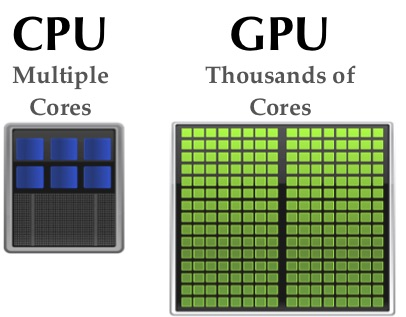

Ferdinando Fioretto
|
A variety of central problems in AI, including finding the most probable explanation (MPE) in Bayesian networks and constraint optimization problems, are modeled as optimizing the costs of a network of cost functions.
These graphical models are used to support decision making under uncertainty as well as to explain a domain, and are used in medical diagnosis, semantic search, and biological network learning. Despite their importance, the inherent complexity of these models challenges their scalability and usability in large complex problems.
|
 |
Related Awards
-
Best AI Dissertation Award: Italian Artificial Intelligence Association, (AI*IA), 2017.
Collaborators
- Federico Campeotto, Amazon
- Agostino Dovier, University of Udine
- Rina Dechter, University of California, Irvine
- Alessandro Dal Palu', University of Parma
- William Yeoh, Washington University in St. Louis
- Enrico Pontelli, New Mexico State University
Recent Publications
-
Ferdinando Fioretto, Enrico Pontelli, William Yeoh, Rina Dechter.
"Accelerating Exact and Approximate Inference for (Distributed) Discrete Optimization with GPUs".
In Constraints, 2018.
Downloads: [pdf] [BibTex] | Links: [web] [github] Show moreAbstract: Discrete optimization is a central problem in artificial intelligence. The optimization of the aggregated cost of a network of cost functions arises in a variety of problems including Weighted Constraint Programs (WCSPs), Distributed Constraint Optimization (DCOP), as well as optimization in stochastic variants such as the tasks of finding the most probable explanation (MPE) in belief networks. Inference-based algorithms are powerful techniques for solving discrete optimization problems, which can be used independently or in combination with other techniques. However, their applicability is often limited by their compute intensive nature and their space requirements. This paper proposes the design and implementation of a novel inference-based technique, which exploits modern massively parallel architectures, such as those found in Graphical Processing Units (GPUs), to speed up the resolution of exact and approximated inference-based algorithms for discrete optimization. The paper studies the proposed algorithm in both centralized and distributed optimization contexts. The paper demonstrates that the use of GPUs provides significant advantages in terms of runtime and scalability, achieving up to two orders of magnitude in speedups and showing a considerable reduction in execution time (up to 345 times faster) with respect to a sequential version. -
Ferdinando Fioretto, William Yeoh, Enrico Pontelli, Ye Ma, Satishkumar Ranade.
"A Distributed Constraint Optimization (DCOP) Approach to the Economic Dispatch with Demand Response".
In Proceedings of the International Conference on Autonomous Agents and Multiagent Systems (AAMAS), 2017.
Downloads: [pdf] [slides] [BibTex] | Links: [web] [request code] Show moreAbstract: With the growing complexity of the current power grid, there is an increasing need for intelligent operations coordinating energy supply and demand. A key feature of the smart grid vision is that intelligent mechanisms will coordinate the production, transmission, and consumption of energy in a distributed and reliable way. Economic Dispatch (ED) and Demand Response (DR) are two key problems that need to be solved to achieve this vision. In traditional operations, ED and DR are implemented separately, despite the strong inter-dependencies between these two problems. Therefore, we propose an integrated approach to solve the ED and DR problems that simultaneously maximizes the benefits of customers and minimizes the generation costs, and introduce an effective multi-agent-based algorithm, based on Distributed Constraint Optimization Problems (DCOPs), acting on direct control of both generators and dispatchable loads. To cope with the high complexity of the problem, our solution employs General Purpose Graphical Processing Units (GPGPUs) to speed up the computational runtime. We empirically evaluate the proposed algorithms on standard IEEE bus systems and test the stability of the proposed solution with a state-of-the-art power system simulator on the IEEE 30-bus system. -
Tiep Le, Ferdinando Fioretto, William Yeoh, Tran Cao Son, and Enrico Pontelli.
"ER-DCOPs: A Framework for DCOPs with Uncertainty in Constraint Utilities".
In Proceedings of the International Conference on Autonomous Agents and Multiagent Systems (AAMAS), 2016.
Downloads: [pdf] [slides] [BibTex] | Links: [web] [request code] Show moreAbstract: Distributed Constraint Optimization Problems (DCOPs) have been used to model a number of multi-agent coordination problems. In DCOPs, agents are assumed to have complete information about the utility of their possible actions. However, in many real-world applications, such utilities are stochastic due to the presence of exogenous events that are beyond the direct control of the agents. This paper addresses this issue by extending the standard DCOP model to Expected Regret DCOP (ER-DCOP) for DCOP applications with uncertainty in constraint utilities. Different from other approaches, ER-DCOPs aim at minimizing the overall expected regret of the problem. The paper proposes the ER-DPOP algorithm for solving ER-DCOPs, which is complete and requires a linear number of messages with respect to the number of agents in the problem. We further present two implementations of ER-DPOP---GPU- and ASP-based implementations---that orthogonally exploit the problem structure and present their evaluations on random networks and power network problems. -
Ferdinando Fioretto, William Yeoh, Enrico Pontelli.
"A Dynamic Programming-based MCMC Framework for Solving DCOPs with GPUs".
In Proceedings of the International Conference on Principles and Practice of Constraint Programming (CP), 2016.
Downloads: [pdf] [slides] [BibTex] | Links: [web] [github] Show moreAbstract: The field of Distributed Constraint Optimization (DCOP) has gained momentum in recent years, thanks to its ability to address various applications related to multi-agent coordination. Nevertheless, solving DCOPs is computationally challenging. Thus, in large scale, complex applications, incomplete DCOP algorithms are necessary. Recently, researchers have introduced a promising class of incomplete DCOP algorithms, based on sampling. However, this paradigm requires a multitude of samples to ensure convergence. This paper exploits the property that sampling is amenable to parallelization, and introduces a general framework, called Distributed MCMC (DMCMC), that is based on a dynamic programming procedure and uses Markov Chain Monte Carlo (MCMC) sampling algorithms to solve DCOPs. Additionally, DMCMC harnesses the parallel computing power of Graphical Processing Units (GPUs) to speed-up the sampling process. The experimental results show that DMCMC can find good solutions up to two order of magnitude faster than other incomplete DCOP algorithms. -
Ferdinando Fioretto, Tiep Le, William Yeoh, Enrico Pontelli and Tran Cao Son.
"Exploiting GPUs in Solving (Distributed) Constraint Optimization Problems with Dynamic Programming".
In Proceedings of the International Conference on Principles and Practice of Constraint Programming (CP), 2015.
Downloads: [pdf] [slides] [BibTex] | Links: [web] [github] Show moreAbstract: This paper proposes the design and implementation of a dynamic programming based algorithm for (distributed) constraint optimization, which exploits modern massively parallel architectures, such as those found in modern Graphical Processing Units (GPUs). The paper studies the proposed algorithm in both centralized and distributed optimization contexts. The experimental analysis, performed on unstructured and structured graphs, shows the advantages of employing GPUs, resulting in enhanced performances and scalability. -
Federico Campeotto, Agostino Dovier, Ferdinando Fioretto and Enrico Pontelli.
"A GPU Implementation of Large Neighborhood Search for Solving Constraint Optimization Problems".
In Proceedings of the European Conference of Artificial Intelligence (ECAI), 2014.
Downloads: [pdf] [slides] [BibTex] | Links: [web] [request code] Show moreAbstract: Constraint programming has gained prominence as an effective and declarative paradigm for modeling and solving complex combinatorial problems. Techniques based on local search have proved practical to solve real-world problems, providing a good compromise between optimality and efficiency. In spite of the natural presence of concurrency, there has been relatively limited effort to use novel massively parallel architectures, such as those found in modern Graphical Processing Units (GPUs), to speedup local search techniques in constraint programming. This paper describes a novel framework which exploits parallelism from a popular local search method (the Large Neighborhood Search method), using GPUs.